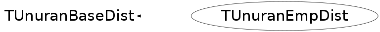

class TUnuranEmpDist: public TUnuranBaseDist
TUnuranEmpDist class for describing empiral distributions. It is used by TUnuran to generate double random number according to this distribution via TUnuran::Sample() or TUnuran::Sample(double *) in case of multi-dimensional empirical distributions. An empirical distribution can be one or multi-dimension constructed from a set of unbinned data, (the class can be constructed from an iterator to a vector of data) or by using an histogram (with apointer to the TH1 class). If the histogram contains a buffer with the original data they are used by default to estimate the empirical distribution, othewise the bins information is used. In this binned case only one dimension is now supported. In the case of unbinned data the density distribution is estimated by UNURAN using kernel smoothing and then random numbers are generated. In the case of bin data (which can only be one dimension) the probability density is estimated directly from the histograms and the random numbers are generated according to the histogram (like in TH1::GetRandom). This method requires some initialization time but it is faster in generating the random numbers than TH1::GetRandom and it becomes convenient to use when generating a large amount of data.
Function Members (Methods)
public:
| TUnuranEmpDist(const TUnuranEmpDist&) | |
| TUnuranEmpDist(const TH1* h1 = 0, bool useBuffer = true) | |
| TUnuranEmpDist(unsigned int n, double* x) | |
| TUnuranEmpDist(unsigned int n, double* x, double* y) | |
| TUnuranEmpDist(double* begin, double* end, unsigned int dim = 1) | |
| TUnuranEmpDist(unsigned int n, double* x, double* y, double* z) | |
| virtual | ~TUnuranEmpDist() |
| static TClass* | Class() |
| virtual TUnuranEmpDist* | Clone() const |
| const vector<double>& | Data() const |
| virtual TClass* | IsA() const |
| bool | IsBinned() const |
| double | LowerBin() const |
| unsigned int | NDim() const |
| TUnuranEmpDist& | operator=(const TUnuranEmpDist& rhs) |
| virtual void | ShowMembers(TMemberInspector& insp) |
| virtual void | Streamer(TBuffer& b) |
| void | StreamerNVirtual(TBuffer& b) |
| double | UpperBin() const |
Class Charts
{kind=link}
{kind=link}
{kind=link}
{kind=link}

Function documentation
TUnuranEmpDist(const TH1* h1 = 0, bool useBuffer = true)
Constructor from a TH1 objects.
If the histogram has a buffer by default the unbinned data are used
TUnuranEmpDist(double* begin, double* end, unsigned int dim = 1)
Constructor from a set of data using an iterator to specify begin/end of the data
In the case of multi-dimension the data are assumed to be passed in this order
x0,y0,...x1,y1,..x2,y2,...
{}const std::vector<double> & Data() const
Return reference to data vector (unbinned or binned data)
{ return fData; }